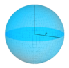

surface
abstraction

Source: Wikipedia
Wikipedia Page (Something wrong with this association? Let us know.)
Wikidata Page (Something wrong with this association? Let us know.)
Occurs in:
- land_surface_water_evapotranspiration__mass_flux
- land_surface__upward_component_of_sensible_heat_energy_flux
- land_surface__upward_component_of_latent_heat_energy_flux
- land_surface__effective_radiative_temperature
- land_surface_air_radiation~longwave~downwelling__energy_flux
- land_surface_air_radiation~longwave~downward__energy_flux
- land_surface_air_radiation~shortwave~downwelling__energy_flux
- land_surface_soil_water__volume_fraction
- land_surface~0-to-10cm-below_soil_water__volume_fraction
- land_surface~100-to-200cm-below_soil_water__volume_fraction
- land_surface~10-to-40cm-below_soil_water__volume_fraction
- land_surface~40-to-100cm-below_soil_water__volume_fraction
- land_surface~0-to-100cm-below_soil_water__volume_fraction
- land_surface~0-to-10cm-below_soil__temperature
- land_surface~100-to-200cm-below_soil__temperature
- land_surface~10-to-40cm-below_soil__temperature
- land_surface~40-to-100cm-below_soil__temperature
- land_surface_radiation~shortwave~downward__energy_flux
- land_surface_wind__speed
- soil_macropores_below-land_surface__depth
- water_below-land_surface__depth
- land_surface_snow_accumulation__time_integral_of_volume_flux
- land_surface_terrain~left_stream_channel_reach_water__volume_flux
- land_surface_terrain~right_stream_channel_reach_water__volume_flux
- atmosphere_top_surface_radiation~incoming~longwave__energy_flux
- atmosphere_top_surface_radiation~incoming~shortwave__energy_flux
- bedrock_below-land_surface__depth
- bedrock_surface__antigradient_of_elevation
- bedrock_surface__elevation
- bedrock_surface__increment_of_elevation
- bedrock_surface__slope
- bedrock_surface__time_derivative_of_elevation
- bedrock_surface__time_derivative_of_slope
- bedrock_surface__x_derivative_of_elevation
- bedrock_surface__x_derivative_of_slope
- bedrock_surface__y_derivative_of_elevation
- bedrock_surface__y_derivative_of_slope
- bedrock_surface_land-mask__elevation
- bedrock_surface_sea-mask__elevation
- channel_bottom_surface__cross-stream_derivative_of_elevation
- channel_bottom_surface__downstream_derivative_of_elevation
- channel_bottom_surface__slope
- channel_bottom_surface__x_derivative_of_elevation
- channel_bottom_surface__y_derivative_of_elevation
- channel_water_channel_bottom_surface__product_of_depth_and_slope
- channel_water_surface__cross-stream_derivative_of_elevation
- channel_water_surface__downstream_derivative_of_elevation
- channel_water_surface__elevation
- channel_water_surface__slope
- channel_water_surface__x_derivative_of_elevation
- channel_water_surface__y_derivative_of_elevation
- channel_water_surface_air__temperature
- channel_water_surface_water__temperature
- earth_surface_viewpoint_sun__azimuth_angle
- earth_surface_viewpoint_sun__elevation_angle
- earth_surface_viewpoint_sun__zenith_angle
- earth_datum_ellipsoid_surface_point-pair_geodesic__distance
- earth_surface__average_of_temperature
- earth_surface__range_of_diurnal_temperature
- earth_surface_earthquake_epicenter__elevation
- earth_surface_earthquake_epicenter__latitude
- earth_surface_earthquake_epicenter__longitude
- earth_surface_earthquake_p-seismic-wave_seismic-station_arrival__time
- earth_surface_earthquake_p-seismic-wave_seismic-station_travel__duration
- earth_surface_earthquake_s-seismic-wave_seismic-station_arrival__time
- earth_surface_earthquake_s-seismic-wave_seismic-station_travel__duration
- earth_surface_land__area_fraction
- earth_surface_ocean__area_fraction
- earth_surface_radiation~incoming~longwave__energy_flux
- earth_surface_radiation~incoming~shortwave__energy_flux
- earth_surface_radiation~incoming__energy_flux
- earth_surface_radiation~incoming~visible__energy_flux
- earth_surface_seismic-station__elevation
- earth_surface_seismic-station__latitude
- earth_surface_seismic-station__longitude
- earth_surface_seismic-station_seismograph_shaking__amplitude
- earth_surface_viewpoint__elevation
- earth_surface_viewpoint__latitude
- earth_surface_viewpoint__longitude
- earth_surface_viewpoint__solar_noon_time
- earth_surface_viewpoint_jupiter__apparent-magnitude_scale
- earth_surface_viewpoint_jupiter_rising__time
- earth_surface_viewpoint_jupiter_setting__time
- earth_surface_viewpoint_jupiter__subtended_angle
- earth_surface_viewpoint_mars__apparent-magnitude_scale
- earth_surface_viewpoint_mars_rising__time
- earth_surface_viewpoint_mars_setting__time
- earth_surface_viewpoint_mars__subtended_angle
- earth_surface_viewpoint_mercury__apparent-magnitude_scale
- earth_surface_viewpoint_mercury_rising__time
- earth_surface_viewpoint_mercury_setting__time
- earth_surface_viewpoint_mercury__subtended_angle
- earth_surface_viewpoint_moon__apparent-magnitude_scale
- earth_surface_viewpoint_moon_rising__time
- earth_surface_viewpoint_moon_setting__time
- earth_surface_viewpoint_moon__subtended_angle
- earth_surface_viewpoint_neptune__apparent-magnitude_scale
- earth_surface_viewpoint_neptune_rising__time
- earth_surface_viewpoint_neptune_setting__time
- earth_surface_viewpoint_neptune__subtended_angle
- earth_surface_viewpoint_saturn__apparent-magnitude_scale
- earth_surface_viewpoint_saturn_rising__time
- earth_surface_viewpoint_saturn_setting__time
- earth_surface_viewpoint_saturn__subtended_angle
- earth_surface_viewpoint_sun__apparent-magnitude_scale
- earth_surface_viewpoint_sun__azimuth_angle
- earth_surface_viewpoint_sun__elevation_angle
- earth_surface_viewpoint_sun_rising__time
- earth_surface_viewpoint_sun_setting__time
- earth_surface_viewpoint_sun__subtended_angle
- earth_surface_viewpoint_sun__zenith_angle
- earth_surface_viewpoint_uranus__apparent-magnitude_scale
- earth_surface_viewpoint_uranus_rising__time
- earth_surface_viewpoint_uranus_setting__time
- earth_surface_viewpoint_uranus__subtended_angle
- earth_surface_viewpoint_venus__apparent-magnitude_scale
- earth_surface_viewpoint_venus_rising__time
- earth_surface_viewpoint_venus_setting__time
- earth_surface_viewpoint_venus__subtended_angle
- earth_surface_water__area_fraction
- earth_surface_wind__range_of_speed
- glacier_bed_surface__aspect_angle
- glacier_bed_surface__elevation
- glacier_bed_surface__slope
- glacier_bed_surface__slope_angle
- glacier_bottom_surface__aspect_angle
- glacier_bottom_surface__elevation
- glacier_bottom_surface__slope
- glacier_bottom_surface__slope_angle
- glacier_bottom_surface_frictional-conduction__heat_energy_flux
- glacier_bottom_surface_geothermal-conduction__heat_energy_flux
- glacier_bottom_surface_conduction__net_heat_energy_flux
- glacier_surface__area
- glacier_top_surface__area
- glacier_top_surface__aspect_angle
- glacier_top_surface__elevation
- glacier_top_surface__emissivity
- glacier_top_surface__max_of_elevation
- glacier_top_surface__mean_of_elevation
- glacier_top_surface__mid-range_of_elevation
- glacier_top_surface__min_of_elevation
- glacier_top_surface__range_of_elevation
- glacier_top_surface__slope
- glacier_top_surface__slope_angle
- glacier_top_surface__temperature
- glacier_top_surface__time_derivative_of_elevation
- glacier_top_surface__net_latent_heat_energy_flux
- glacier_top_surface__net_sensible_heat_energy_flux
- glacier_top_surface_radiation~incoming~longwave__energy_flux
- glacier_top_surface_radiation~incoming~shortwave__energy_flux
- glacier_top_surface_radiation~outgoing~longwave__energy_flux
- lake_surface__area
- land-or-sea_surface_radiation~incoming~shortwave__energy_flux
- land_surface__albedo
- land_surface__anomaly_of_temperature
- land_surface__aspect_angle
- land_surface__domain_max_of_elevation
- land_surface__domain_max_of_increment_of_elevation
- land_surface__domain_min_of_elevation
- land_surface__domain_min_of_increment_of_elevation
- land_surface__domain_range_of_elevation
- land_surface__domain_time_max_of_elevation
- land_surface__domain_time_min_of_elevation
- land_surface__elevation
- land_surface__emissivity
- land_surface__gaussian_curvature
- land_surface__increment_of_elevation
- land_surface_water_infiltration__length-per-time_rate
- land_surface__initial_elevation
- land_surface__laplacian_of_elevation
- land_surface__latitude
- land_surface__longitude
- land_surface__max_of_normal_curvature
- land_surface__mean_of_curvature
- land_surface__min_of_normal_curvature
- land_surface_plan__curvature
- land_surface_profile__curvature
- land_surface__slope
- land_surface__slope_angle
- land_surface__specific_contributing_area
- land_surface_streamline__curvature
- land_surface_sunshine__duration
- land_surface__tangential_curvature
- land_surface__temperature
- land_surface__thermal_inertia
- land_surface__time_derivative_of_elevation
- land_surface__time_max_of_elevation
- land_surface__time_min_of_elevation
- land_surface__topographic_wetness_index
- land_surface__x_derivative_of_elevation
- land_surface__x_derivative_of_slope
- land_surface__x_x_derivative_of_elevation
- land_surface__x_y_derivative_of_elevation
- land_surface__y_derivative_of_elevation
- land_surface__y_derivative_of_slope
- land_surface__y_y_derivative_of_elevation
- land_surface_air__pressure
- land_surface_air__temperature
- land_surface_air_flowing__speed
- land_surface_air__incoming_component_of_latent_heat_energy_flux
- land_surface_air__incoming_component_of_sensible_heat_energy_flux
- land_surface_air__net_latent_heat_energy_flux
- land_surface_air__net_sensible_heat_energy_flux
- land_surface_base-level__elevation
- land_surface_base-level__initial_elevation
- land_surface_base-level__time_derivative_of_elevation
- land_surface_contour_segment__contributing_area
- land_surface__net_energy_flux
- land_surface_polygon__contributing_area
- land_surface_radiation~incoming~longwave~absorbed__energy_flux
- land_surface_radiation~incoming~longwave_absorption__absorptance
- land_surface_radiation~incoming~longwave_emission__emittance
- land_surface_radiation~incoming~longwave__energy_flux
- land_surface_radiation~incoming~longwave_reflection__reflectance
- land_surface_radiation~incoming~longwave~reflected__energy_flux
- land_surface_radiation~incoming~shortwave~absorbed__energy_flux
- land_surface_radiation~incoming~shortwave_absorption__absorptance
- land_surface_radiation~incoming~shortwave~backscattered__energy_flux
- land_surface_radiation~incoming~shortwave~diffuse__energy_flux
- land_surface_radiation~incoming~shortwave~direct__energy_flux
- land_surface_radiation~incoming~shortwave__energy_flux
- land_surface_radiation~incoming~shortwave__one-hour_time_integral_of_energy_flux
- land_surface_radiation~incoming~shortwave_reflection__reflectance
- land_surface_radiation~incoming~shortwave~reflected__energy_flux
- land_surface_radiation~incoming~absorbed__energy_flux
- land_surface_radiation~incoming_absorption__absorptance
- land_surface_radiation~incoming__energy_flux
- land_surface_radiation~incoming_reflection__reflectance
- land_surface_radiation~incoming~reflected__energy_flux
- land_surface_radiation~net~longwave__energy_flux
- land_surface_radiation~net~shortwave__energy_flux
- land_surface_radiation~net__energy_flux
- land_surface_radiation~outgoing~longwave_emission__emittance
- land_surface_radiation~outgoing~longwave~emitted__energy_flux
- land_surface_radiation~outgoing~longwave__energy_flux
- land_surface_soil_conduction__heat_energy_flux
- land_surface_transect__contributing_area
- land_surface_water_baseflow__mass_flux
- land_surface_water_baseflow__volume_flux
- land_surface_water__depth
- land_surface_water_baseflow__domain_time_integral_of_volume_flux
- land_surface_water_evaporation__domain_time_integral_of_volume_flux
- land_surface_water_runoff__domain_time_integral_of_volume_flux
- land_surface_water__east_derivative_of_depth
- land_surface_water__east_derivative_of_pressure_head
- land_surface_water_evaporation__mass_flux
- land_surface_water_evaporation__volume_flux
- land_surface_water_infiltration_ponding__depth
- land_surface_water_infiltration_ponding__time
- land_surface_water__north_derivative_of_depth
- land_surface_water__north_derivative_of_pressure_head
- land_surface_water_evaporation__potential_volume_flux
- land_surface_water__priestley-taylor_alpha_coefficient
- land_surface_water_runoff__mass_flux
- land_surface_water_runoff__volume_flux
- land_surface_water__time_derivative_of_depth
- land_surface_water__time_derivative_of_pressure_head
- land_surface_water__x_derivative_of_depth
- land_surface_water__x_derivative_of_pressure_head
- land_surface_water__y_derivative_of_depth
- land_surface_water__y_derivative_of_pressure_head
- land_surface_water_flowing__azimuth_angle_of_velocity
- land_surface_water_flowing__azimuth_angle_of_z_integral_of_velocity
- land_surface_water_flowing__depth
- land_surface_water_flowing__down_component_of_velocity
- land_surface_water_flowing__east_component_of_velocity
- land_surface_water_flowing__east_component_of_z_integral_of_velocity
- land_surface_water_flowing__east_derivative_of_east_component_of_z_integral_of_velocity
- land_surface_water_flowing__east_derivative_of_north_component_of_z_integral_of_velocity
- land_surface_water_flowing__elevation_angle_of_velocity
- land_surface_water_flowing__magnitude_of_z_integral_of_velocity
- land_surface_water_flowing__north_component_of_velocity
- land_surface_water_flowing__north_component_of_z_integral_of_velocity
- land_surface_water_flowing__north_derivative_of_east_component_of_z_integral_of_velocity
- land_surface_water_flowing__north_derivative_of_north_component_of_z_integral_of_velocity
- land_surface_water_flowing__speed
- land_surface_water_flowing__time_derivative_of_down_component_of_velocity
- land_surface_water_flowing__time_derivative_of_east_component_of_velocity
- land_surface_water_flowing__time_derivative_of_east_component_of_z_integral_of_velocity
- land_surface_water_flowing__time_derivative_of_north_component_of_velocity
- land_surface_water_flowing__time_derivative_of_north_component_of_z_integral_of_velocity
- land_surface_water_flowing__time_derivative_of_x_component_of_velocity
- land_surface_water_flowing__time_derivative_of_x_component_of_z_integral_of_velocity
- land_surface_water_flowing__time_derivative_of_y_component_of_velocity
- land_surface_water_flowing__time_derivative_of_y_component_of_z_integral_of_velocity
- land_surface_water_flowing__time_derivative_of_z_component_of_velocity
- land_surface_water_flowing__x_component_of_velocity
- land_surface_water_flowing__x_component_of_z_integral_of_velocity
- land_surface_water_flowing__x_derivative_of_x_component_of_z_integral_of_velocity
- land_surface_water_flowing__x_derivative_of_y_component_of_z_integral_of_velocity
- land_surface_water_flowing__y_component_of_velocity
- land_surface_water_flowing__y_component_of_z_integral_of_velocity
- land_surface_water_flowing__y_derivative_of_x_component_of_z_integral_of_velocity
- land_surface_water_flowing__y_derivative_of_y_component_of_z_integral_of_velocity
- land_surface_water_flowing__z_component_of_velocity
- land_surface_water_flowing_sink__volume_rate
- land_surface_water_flowing_source__volume_rate
- land_surface_water_surface__elevation
- land_surface_water_surface__time_derivative_of_elevation
- land_surface_water_surface__x_derivative_of_elevation
- land_surface_water_surface__y_derivative_of_elevation
- land_surface_wind_at-reference-height__speed
- land_surface_wind_at-speed__reference_height
- land_surface~10m-above_air__temperature
- land_surface~10m-above_air_flowing__speed
- land_surface~10m-above_air_flowing__x_component_of_velocity
- land_surface~10m-above_air_flowing__y_component_of_velocity
- mars_surface_viewpoint_venus_rising__time
- mars_surface_viewpoint_venus_setting__time
- projectile_trajectory_origin_land_surface__aspect_angle
- projectile_trajectory_origin_land_surface__slope
- projectile_trajectory_origin_land_surface__slope_angle
- projectile_trajectory_target_land_surface__aspect_angle
- projectile_trajectory_target_land_surface__slope
- projectile_trajectory_target_land_surface__slope_angle
- sea_bottom_surface__elevation
- sea_bottom_surface__latitude
- sea_bottom_surface__longitude
- sea_bottom_surface__slope
- sea_bottom_surface__time_derivative_of_elevation
- sea_bottom_surface__x_derivative_of_elevation
- sea_bottom_surface__y_derivative_of_elevation
- sea_bottom_surface__net_heat_energy_flux
- sea_bottom_surface_water_flowing__normal_component_of_stress
- sea_bottom_surface_water_flowing__x_z_component_of_shear_stress
- sea_ice_surface_air__temperature
- sea_surface__elevation
- sea_surface__latitude
- sea_surface__longitude
- sea_surface__slope
- sea_surface_air_sea_surface_water__difference_of_temperature
- sea_surface_air__magnitude_of_shear_stress
- sea_surface_air__pressure
- sea_surface_air__reference_pressure
- sea_surface_air__reference_temperature
- sea_surface_air__temperature
- sea_surface_air_carbon-dioxide__partial_pressure
- sea_surface_air_flowing__magnitude_of_shear_velocity
- sea_surface_air_flowing__shear_speed
- sea_surface_air_flowing__speed
- sea_surface_air_flowing__x_component_of_shear_velocity
- sea_surface_air_flowing__x_component_of_velocity
- sea_surface_air_flowing__y_component_of_shear_velocity
- sea_surface_air_flowing__y_component_of_velocity
- sea_surface_air_flowing__z_component_of_velocity
- sea_surface_air_water~vapor__partial_pressure
- sea_surface_air_water~vapor__relative_saturation
- sea_surface_radiation~incoming~shortwave~absorbed__energy_flux
- sea_surface_radiation~incoming~shortwave_absorption__absorptance
- sea_surface_radiation~incoming~shortwave__energy_flux
- sea_surface_radiation~incoming~shortwave_reflection__reflectance
- sea_surface_radiation~incoming~shortwave~reflected__energy_flux
- sea_surface_radiation~outgoing~longwave__energy_flux
- sea_surface_storm_water_surge__height
- sea_surface_water__anomaly_of_geopotential_height
- sea_surface_water__anomaly_of_temperature
- sea_surface_water_evaporation__mass_flux
- sea_surface_water_evaporation__volume_flux
- sea_surface_water__geopotential_height
- sea_surface_water__mass-per-volume_density
- sea_surface_water_precipitation__leq_volume_flux
- sea_surface_water_precipitation__mass_flux
- sea_surface_water__salinity
- sea_surface_water__temperature
- sea_surface_water_carbon-dioxide__partial_pressure
- sea_surface_water__net_latent_heat_energy_flux
- sea_surface_water__net_sensible_heat_energy_flux
- sea_surface_water_tide_constituents__amplitude
- sea_surface_water_tide_constituent-2mk3__amplitude
- sea_surface_water_tide_constituent-2mk3__angular_speed
- sea_surface_water_tide_constituent-2mk3__period
- sea_surface_water_tide_constituent-2mk3__phase_angle
- sea_surface_water_tide_constituent-2mk3_amphidromic-points__latitude
- sea_surface_water_tide_constituent-2mk3_amphidromic-points__longitude
- sea_surface_water_tide_constituent-2n2__amplitude
- sea_surface_water_tide_constituent-2n2__angular_speed
- sea_surface_water_tide_constituent-2n2__period
- sea_surface_water_tide_constituent-2n2__phase_angle
- sea_surface_water_tide_constituent-2q1__amplitude
- sea_surface_water_tide_constituent-2q1__angular_speed
- sea_surface_water_tide_constituent-2q1__period
- sea_surface_water_tide_constituent-2q1__phase_angle
- sea_surface_water_tide_constituent-2sm2__amplitude
- sea_surface_water_tide_constituent-2sm2__angular_speed
- sea_surface_water_tide_constituent-2sm2__period
- sea_surface_water_tide_constituent-2sm2__phase_angle
- sea_surface_water_tide_constituent-j1__amplitude
- sea_surface_water_tide_constituent-j1__angular_speed
- sea_surface_water_tide_constituent-j1__period
- sea_surface_water_tide_constituent-j1__phase_angle
- sea_surface_water_tide_constituent-k1__amplitude
- sea_surface_water_tide_constituent-k1__angular_speed
- sea_surface_water_tide_constituent-k1__period
- sea_surface_water_tide_constituent-k1__phase_angle
- sea_surface_water_tide_constituent-k2__amplitude
- sea_surface_water_tide_constituent-k2__angular_speed
- sea_surface_water_tide_constituent-k2__period
- sea_surface_water_tide_constituent-k2__phase_angle
- sea_surface_water_tide_constituent-l2__amplitude
- sea_surface_water_tide_constituent-l2__angular_speed
- sea_surface_water_tide_constituent-l2__period
- sea_surface_water_tide_constituent-l2__phase_angle
- sea_surface_water_tide_constituent-lam2__amplitude
- sea_surface_water_tide_constituent-lam2__angular_speed
- sea_surface_water_tide_constituent-lam2__period
- sea_surface_water_tide_constituent-lam2__phase_angle
- sea_surface_water_tide_constituent-m1__amplitude
- sea_surface_water_tide_constituent-m1__angular_speed
- sea_surface_water_tide_constituent-m1__period
- sea_surface_water_tide_constituent-m1__phase_angle
- sea_surface_water_tide_constituent-m2__amplitude
- sea_surface_water_tide_constituent-m2__angular_speed
- sea_surface_water_tide_constituent-m2__period
- sea_surface_water_tide_constituent-m2__phase_angle
- sea_surface_water_tide_constituent-m3__amplitude
- sea_surface_water_tide_constituent-m3__angular_speed
- sea_surface_water_tide_constituent-m3__period
- sea_surface_water_tide_constituent-m3__phase_angle
- sea_surface_water_tide_constituent-m4__amplitude
- sea_surface_water_tide_constituent-m4__angular_speed
- sea_surface_water_tide_constituent-m4__period
- sea_surface_water_tide_constituent-m4__phase_angle
- sea_surface_water_tide_constituent-m6__amplitude
- sea_surface_water_tide_constituent-m6__angular_speed
- sea_surface_water_tide_constituent-m6__period
- sea_surface_water_tide_constituent-m6__phase_angle
- sea_surface_water_tide_constituent-m8__amplitude
- sea_surface_water_tide_constituent-m8__angular_speed
- sea_surface_water_tide_constituent-m8__period
- sea_surface_water_tide_constituent-m8__phase_angle
- sea_surface_water_tide_constituent-mf__amplitude
- sea_surface_water_tide_constituent-mf__angular_speed
- sea_surface_water_tide_constituent-mf__period
- sea_surface_water_tide_constituent-mf__phase_angle
- sea_surface_water_tide_constituent-mk3__amplitude
- sea_surface_water_tide_constituent-mk3__angular_speed
- sea_surface_water_tide_constituent-mk3__period
- sea_surface_water_tide_constituent-mk3__phase_angle
- sea_surface_water_tide_constituent-mm__amplitude
- sea_surface_water_tide_constituent-mm__angular_speed
- sea_surface_water_tide_constituent-mm__period
- sea_surface_water_tide_constituent-mm__phase_angle
- sea_surface_water_tide_constituent-mn4__amplitude
- sea_surface_water_tide_constituent-mn4__angular_speed
- sea_surface_water_tide_constituent-mn4__period
- sea_surface_water_tide_constituent-mn4__phase_angle
- sea_surface_water_tide_constituent-ms4__amplitude
- sea_surface_water_tide_constituent-ms4__angular_speed
- sea_surface_water_tide_constituent-ms4__period
- sea_surface_water_tide_constituent-ms4__phase_angle
- sea_surface_water_tide_constituent-msf__amplitude
- sea_surface_water_tide_constituent-msf__angular_speed
- sea_surface_water_tide_constituent-msf__period
- sea_surface_water_tide_constituent-msf__phase_angle
- sea_surface_water_tide_constituent-mu2__amplitude
- sea_surface_water_tide_constituent-mu2__angular_speed
- sea_surface_water_tide_constituent-mu2__period
- sea_surface_water_tide_constituent-mu2__phase_angle
- sea_surface_water_tide_constituent-n2__amplitude
- sea_surface_water_tide_constituent-n2__angular_speed
- sea_surface_water_tide_constituent-n2__period
- sea_surface_water_tide_constituent-n2__phase_angle
- sea_surface_water_tide_constituent-nu2__amplitude
- sea_surface_water_tide_constituent-nu2__angular_speed
- sea_surface_water_tide_constituent-nu2__period
- sea_surface_water_tide_constituent-nu2__phase_angle
- sea_surface_water_tide_constituent-o1__amplitude
- sea_surface_water_tide_constituent-o1__angular_speed
- sea_surface_water_tide_constituent-o1__period
- sea_surface_water_tide_constituent-o1__phase_angle
- sea_surface_water_tide_constituent-oo1__amplitude
- sea_surface_water_tide_constituent-oo1__angular_speed
- sea_surface_water_tide_constituent-oo1__period
- sea_surface_water_tide_constituent-oo1__phase_angle
- sea_surface_water_tide_constituent-oo2__amplitude
- sea_surface_water_tide_constituent-oo2__angular_speed
- sea_surface_water_tide_constituent-oo2__period
- sea_surface_water_tide_constituent-oo2__phase_angle
- sea_surface_water_tide_constituent-p1__amplitude
- sea_surface_water_tide_constituent-p1__angular_speed
- sea_surface_water_tide_constituent-p1__period
- sea_surface_water_tide_constituent-p1__phase_angle
- sea_surface_water_tide_constituent-q1__amplitude
- sea_surface_water_tide_constituent-q1__angular_speed
- sea_surface_water_tide_constituent-q1__period
- sea_surface_water_tide_constituent-q1__phase_angle
- sea_surface_water_tide_constituent-r2__amplitude
- sea_surface_water_tide_constituent-r2__angular_speed
- sea_surface_water_tide_constituent-r2__period
- sea_surface_water_tide_constituent-r2__phase_angle
- sea_surface_water_tide_constituent-rho__amplitude
- sea_surface_water_tide_constituent-rho__angular_speed
- sea_surface_water_tide_constituent-rho__period
- sea_surface_water_tide_constituent-rho__phase_angle
- sea_surface_water_tide_constituent-s1__amplitude
- sea_surface_water_tide_constituent-s1__angular_speed
- sea_surface_water_tide_constituent-s1__period
- sea_surface_water_tide_constituent-s1__phase_angle
- sea_surface_water_tide_constituent-s2__amplitude
- sea_surface_water_tide_constituent-s2__angular_speed
- sea_surface_water_tide_constituent-s2__period
- sea_surface_water_tide_constituent-s2__phase_angle
- sea_surface_water_tide_constituent-s4__amplitude
- sea_surface_water_tide_constituent-s4__angular_speed
- sea_surface_water_tide_constituent-s4__period
- sea_surface_water_tide_constituent-s4__phase_angle
- sea_surface_water_tide_constituent-s6__amplitude
- sea_surface_water_tide_constituent-s6__angular_speed
- sea_surface_water_tide_constituent-s6__period
- sea_surface_water_tide_constituent-s6__phase_angle
- sea_surface_water_tide_constituent-sa__amplitude
- sea_surface_water_tide_constituent-sa__angular_speed
- sea_surface_water_tide_constituent-sa__period
- sea_surface_water_tide_constituent-sa__phase_angle
- sea_surface_water_tide_constituent-ssa__amplitude
- sea_surface_water_tide_constituent-ssa__angular_speed
- sea_surface_water_tide_constituent-ssa__period
- sea_surface_water_tide_constituent-ssa__phase_angle
- sea_surface_water_tide_constituent-t2__amplitude
- sea_surface_water_tide_constituent-t2__angular_speed
- sea_surface_water_tide_constituent-t2__period
- sea_surface_water_tide_constituent-t2__phase_angle
- sea_surface_water_wave__amplitude
- sea_surface_water_wave__angular_frequency
- sea_surface_water_wave__angular_wavenumber
- sea_surface_water_breaking-wave__volume_fraction
- sea_surface_water_breaking-wave__height
- sea_surface_water_breaking-wave__height-to-depth_ratio
- sea_surface_water_wave__energy-per-area_density
- sea_surface_water_wave__frequency
- sea_surface_water_wave__group-speed-to-phase-speed_ratio
- sea_surface_water_wave__group_speed
- sea_surface_water_wave__height
- sea_surface_water_wave__intrinsic_angular_frequency
- sea_surface_water_wave__max_of_orbital_speed
- observation_sea_surface_water_wave__angular_frequency
- sea_surface_water_wave__orbital_speed
- sea_surface_water_wave__period
- sea_surface_water_wave__phase_angle
- sea_surface_water_wave__phase_speed
- sea_surface_water_wave__power
- sea_surface_water_wave_refraction__angle
- sea_surface_water_wave__significant_height
- sea_surface_water_wave__slope
- sea_surface_water_wave__time_integral_from_start_of_cosine_of_product_of_angular_frequency_and_time
- sea_surface_water_wave__time_mean_of_height
- sea_surface_water_wave__time_median_of_height
- sea_surface_water_wave__wavelength
- sea_surface_water_wave__wavenumber
- sea_surface_water_wave_crest_x-section_vertex__angle
- sea_surface_water_wave_crestline__power-per-length_density
- sea_surface_water_wave_ray__incidence_angle
- sea_water_below-sea_surface__depth
- sea_water_surface__elevation
- snowpack_surface__indentation_hardness
- snowpack_top_surface__indentation_hardness
- bedrock_top_from-soil_surface__depth
- soil_surface_water_infiltration__domain_time_integral_of_volume_flux
- soil_surface_water_infiltration__mass_flux
- soil_surface_water_infiltration__volume_flux
- soil_surface_water_infiltration__potential_volume_flux
- soil_surface_water_infiltration__time_integral_of_volume_flux
- soil_surface_water__volume_fraction
- soil_water_phreatic-zone_top_surface__elevation
- soil_water_phreatic-zone_top_surface__initial_elevation
- soil_water_phreatic-zone_top_surface__slope
- soil_water_phreatic-zone_top_surface__x_derivative_of_elevation
- soil_water_phreatic-zone_top_surface__y_derivative_of_elevation
- sphere_surface__area
- earth_surface_seismic-station__name
- earth_surface_seismic-station_network__name
- earth_surface_p-seismic-wave_seismic-station_arrival__time
- earth_surface_p-seismic-wave_seismic-station_travel__duration
- earth_surface_s-seismic-wave_seismic-station_arrival__time
- earth_surface_s-seismic-wave_seismic-station_travel__duration
- earth_surface_seismic-station_component__name
- earth_surface_seismic-station_data-acquisition-system__type
- earth_surface_seismic-station_data-stream__frequency
- earth_surface_seismic-station_data-stream__end_time
- earth_surface_seismic-station_data-stream__start_time
- earth_surface_seismic-station_instrument-response_filter__type
- land_surface_snow_sublimation__volume_flux
- soil_surface_water_evaporation__volume_flux
- soil_surface_water_irrigation__volume_flux
- soil_surface_water_runoff__volume_flux
- soil_surface_water_evaporation__time_integral_of_volume_flux
- land_soil~dry_surface__albedo
- land_surface~horizontal_radiation~incoming~shortwave__energy_flux
- land_surface_water_runoff__usdanrcs_curve_number
- land_surface_water_surface__height_flood_index
- land_surface_radiation~solar__energy_flux
- soil_surface_residue~standing_carbon_nitrogen__mass_ratio
- land_surface~0-to-10cm-below_soil_water__month-specific_anomaly_of_volume_fraction
- land_surface~0-to-100cm-below_soil_water__month-specific_anomaly_of_volume_fraction
- land_surface~2m-above_air__temperature
- land_surface~2m-above_air__month-specific_anomaly_of_temperature
- land_surface__first_dekad_one-day_mean_of_temperature
- land_surface__second_dekad_one-day_mean_of_temperature
- land_surface__third_dekad_one-day_mean_of_temperature
- land_surface__one-month_one-day_mean_of_temperature
- land_surface__month-specific_anomaly_of_first_dekad_one-day_mean_of_temperature
- land_surface__month-specific_anomaly_of_second_dekad_one-day_mean_of_temperature
- land_surface__month-specific_anomaly_of_third_dekad_one-day_mean_of_temperature
- land_surface__month-specific_anomaly_of_one-month_one-day_mean_of_temperature
- land_surface__month-specific_z-score_of_first_dekad_one-day_mean_of_temperature
- land_surface__month-specific_z-score_of_second_dekad_one-day_mean_of_temperature
- land_surface__month-specific_z-score_of_third_dekad_one-day_mean_of_temperature
- land_surface__month-specific_z-score_of_one-month_one-day_mean_of_temperature
- land_surface_vegetation_water_evapotranspiration__mass_flux
- land_surface_storm_water_runoff__time_integral_of_mass_flux
- land_surface_radiation~longwave~downward__energy_flux
- land_surface~0-to-10cm-below_soil_water__mass-per-area_density
- land_surface~10-to-40cm-below_soil_water__mass-per-area_density
- land_surface~40-to-100cm-below_soil_water__mass-per-area_density
- land_surface~100-to-200cm-below_soil_water__mass-per-area_density
- land_surface_snow_accumulation__time_integral_of_mass_flux
- land_surface_snowpack__depth
- land_surface_water_evaporation__potential_energy_flux
- land_surface_vegetation_canopy_water__mass-per-area_density
- land_surface_soil~bare_water_evaporation~direct__energy_flux
- land_surface_snow_meltwater__time_integral_of_mass_flux
- land_surface__average_of_skin_temperature
- land_surface_snow~intercepted__volume-per-area_storage_density
- land_surface_soil_water__volume-per-area_storage_density
- land_surface_water_evapotranspiration__potential_volume_flux
- land_surface_water~intercepted_evaporation__volume_flux
- land_surface_water_transpiration__volume_flux
- land_surface_soil_water_evaporation__volume_flux
- land_surface_water_infiltration__volume_flux
- land_surface_water_flowing__volume_rate
- river_channel_land_surface_water_flowing__volume_rate
- groundwater_surface__reduction_of_elevation